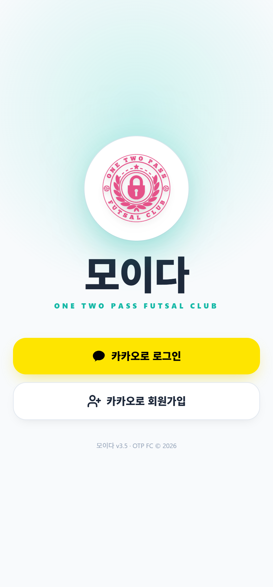
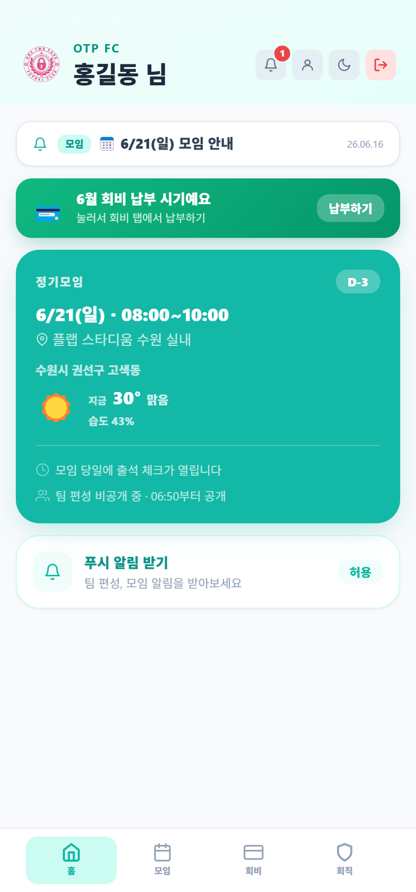
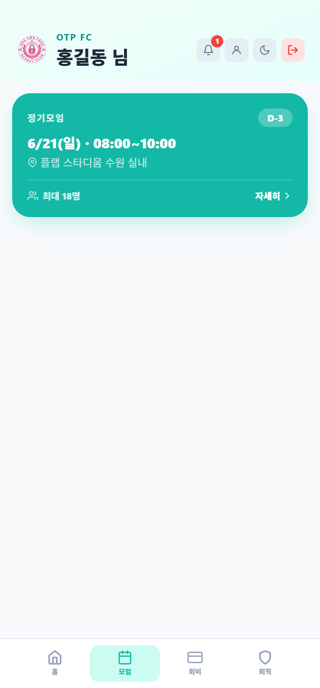
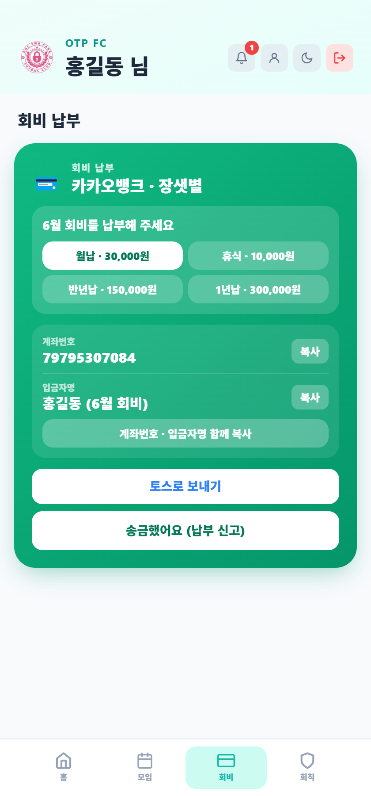
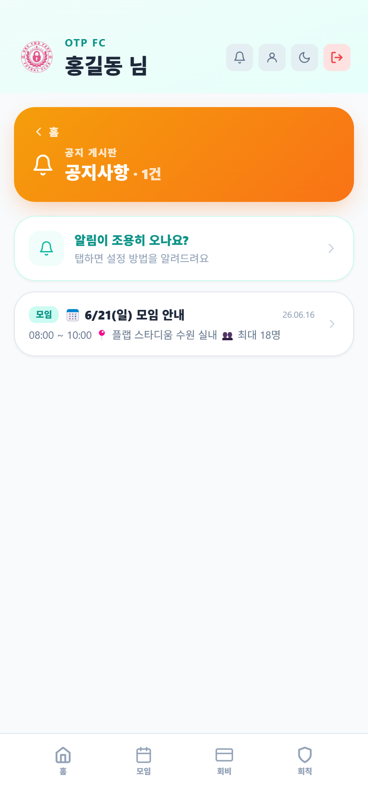

📌 이 설명서로 PDF 만드는 법
- 이 파일과 같은 위치에 manual-img 폴더를 만드세요.
- 각 자리에 적힌 파일명(예:
home.png)으로 캡처를 저장해 그 폴더에 넣으면 자동으로 들어갑니다. - 다 넣었으면 오른쪽 위 🖨 PDF로 저장 버튼 → 대상을 'PDF로 저장' 선택 → 저장.
⚽
모이다 사용 설명서
OTP FC 모이다 · 풋살팀 운영 관리 앱
회원용 + 관리자용
앱 접속 & 설치
모이다는 설치 없이 인터넷 주소로 바로 쓰는 앱(PWA)입니다.
주소 휴대폰 브라우저에 아래 주소를 입력해 접속합니다.
https://nakdo0415-crypto.github.io/moida/member.html
https://nakdo0415-crypto.github.io/moida/member.html
홈 화면 추가 아이폰: 공유 → '홈 화면에 추가' / 안드로이드: 메뉴 → '홈 화면에 추가'. 그러면 아이콘으로 앱처럼 쓸 수 있습니다.
알림(공지·모임 안내)을 받으려면, 처음 들어갈 때 뜨는 알림 허용을 눌러주세요.
PART 1. 회원용
1. 로그인 / 가입
일반 회원첫 화면 카카오로 시작을 누르면 카카오 계정으로 로그인됩니다. 처음이면 이름·연락처 등 간단한 가입 정보를 입력합니다.
가입 신청을 하면 운영진 승인 후 정식 회원으로 이용할 수 있습니다.

📷
여기에 로그인/가입 화면 캡처
manual-img/login.png2. 홈 화면 보기
일반 회원로그인하면 가장 먼저 보이는 화면입니다.
홈 탭 다음 모임 카드에서 가장 가까운 모임을 한눈에 봅니다. 정기 모임은 청록색, 매칭 모임은 남보라색으로 구분됩니다.
상단의 공지 띠/종 아이콘을 누르면 공지 게시판으로 들어갑니다.

📷
여기에 홈 화면 캡처
manual-img/home.png3. 모임 신청 & 출석 체크인
일반 회원모임 탭 모임 카드를 누르면 그 모임의 출석 · 대진 · 매치를 볼 수 있습니다.
신청 버튼으로 참가 신청을 합니다. (선착순 모임은 정원이 차면 대기로 넘어갑니다.)
모임 당일 현장에서 QR 코드 스캔 또는 현재 위치(GPS)로 출석 체크인을 합니다.
회비나 벌금이 미납이면 모임 신청이 제한될 수 있습니다. (회비/벌금 항목 참고)

📷
여기에 모임 신청/체크인 화면 캡처
manual-img/checkin.png4. 회비 납부
일반 회원회비 탭 내 회비 상태(납부/미납)를 확인합니다.
토스로 납부를 누르면 금액이 자동 입력된 송금 화면으로 연결되거나, 계좌 복사 후 직접 이체할 수 있습니다.
이체 후 보냈어요를 누르면 운영진 확인 대기 상태가 되고, 확정되면 납부 완료로 바뀝니다.

📷
여기에 회비 탭 캡처
manual-img/dues.png5. 벌금(지각 · 노쇼) 납부
일반 회원지각·노쇼 시 벌금이 부과됩니다. (지각 5천 · 통보 노쇼 1만/2만 · 무통보 노쇼 3만)
회비 탭 벌금 카드에서 토스 납부 또는 계좌 복사로 납부 후 보냈어요를 누릅니다.
벌금 미납 시에는 다음 모임 신청이 완전히 차단됩니다. 납부 후 운영진 확정되면 풀립니다.

📷
여기에 벌금 납부 화면 캡처
manual-img/penalty.png6. 팀 & 매치 보기
일반 회원모임 상세 대진(팀) 탭에서 내가 속한 팀과 조끼 색을 확인합니다.
매치 탭에서 경기 순서와 상대를 봅니다.

📷
여기에 팀/매치 화면 캡처
manual-img/team.png7. 회칙 & 공지
일반 회원회칙 탭 팀 회칙을 언제든 볼 수 있습니다.
공지 상단 종 아이콘 → 공지 게시판에서 지난 공지를 모아 봅니다. 새 공지는 알림으로도 옵니다.

📷
여기에 공지/회칙 화면 캡처
manual-img/notice.pngPART 2. 관리자(운영진)용
1. 모임 등록 & 정기 모임 자동 생성
관리자출석관리 모임 목록에서 모임을 등록 · 수정 · 삭제합니다. (날짜·시간·장소·종류)
정기 모임 설정에서 요일·시간·생성 시점을 정하면 정기 모임이 자동으로 만들어집니다. 날짜별로 구장·선착순 인원을 미리 지정할 수도 있습니다.

📷
여기에 모임 목록/정기설정 캡처
manual-img/admin-meetings.png2. 모임 설정 (위치 · QR · 선착순)
관리자출석관리 모임 설정에서 GPS 반경 · QR 사용 · 선착순 정원 · 담당자를 지정합니다.
QR 출석을 쓰면 QR 코드를 생성해 현장에 띄워두고 회원이 스캔해 체크인합니다.

📷
여기에 모임 설정 화면 캡처
manual-img/admin-setup.png3. 출석 현황 & 키오스크(직접 출석)
관리자출석관리 출석 현황에서 실시간으로 팀별 출석 상태를 봅니다.
키오스크 모드 열기를 누르면(주로 아이패드) 팀별 번호 카드가 한 줄로 나오고, 회원이 자기 번호/이름을 눌러 직접 출석합니다.
모임이 끝나면 기록 확정으로 그날 출석을 저장합니다.

📷
여기에 키오스크 출석 화면 캡처 (아이패드)
manual-img/admin-kiosk.png4. 가입 승인 & 출결 기록 관리
관리자출석관리 새 가입 신청을 승인 / 거부합니다.
출결 기록에서 지난 모임의 출석 목록·상세를 보고, 상태 변경·장소 수정·삭제를 할 수 있습니다.

📷
여기에 출결 기록 화면 캡처
manual-img/admin-history.png5. 회원 & 회비 관리
관리자명단 회원 추가·수정·탈퇴, 운영진 지정을 합니다.
회비(월납·반년납·1년납)와 휴식 회원을 관리하고, 회원이 '보냈어요' 한 납부를 확정합니다.

📷
여기에 회원/회비 관리 화면 캡처
manual-img/admin-roster.png6. 팀 편성
관리자팀 편성 참가자를 바탕으로 자동으로 균형 잡힌 팀을 만듭니다.
드래그로 직접 옮겨 조정하고, 저장 · 확정합니다. 팀 결과는 이미지로도 저장할 수 있습니다.

📷
여기에 팀 편성 화면 캡처
manual-img/admin-team.png7. 매치 진행
관리자매치 경기 스케줄(대진표)을 자동 생성하고, 경기 진행·결과를 기록합니다.
통계 확인과 대진표 이미지 저장이 가능합니다. (워치앱으로 경기 종료를 원격 기록할 수도 있습니다.)

📷
여기에 매치 진행 화면 캡처
manual-img/admin-match.png8. 벌금 확정 & 공지 발송
관리자출결 기록 모임 상세의 벌금 패널에서 지각·노쇼 벌금을 확정·발송합니다.
공지 공지를 작성해 대상(전체/직접/회비 자격자/이번 모임 참여자)을 골라 발송합니다.

📷
여기에 벌금/공지 화면 캡처
manual-img/admin-announce.png📋 스크린샷 촬영 체크리스트
아래 파일명으로 캡처를 저장해 manual-img 폴더에 넣으세요.
| login.png | 회원 앱 로그인/가입 첫 화면 |
| home.png | 회원 홈 화면 (다음 모임 카드) |
| checkin.png | 모임 신청 / 출석 체크인 화면 |
| dues.png | 회비 탭 (납부 화면) |
| penalty.png | 벌금 납부 카드 |
| team.png | 모임 상세 — 팀/매치 화면 |
| notice.png | 공지 게시판 (또는 회칙) |
| admin-meetings.png | 출석관리 — 모임 목록 / 정기 설정 |
| admin-setup.png | 모임 설정 (GPS·QR·선착순) |
| admin-kiosk.png | 키오스크 직접 출석 (아이패드) |
| admin-history.png | 출결 기록 목록/상세 |
| admin-roster.png | 명단 — 회원/회비 관리 |
| admin-team.png | 팀 편성 화면 |
| admin-match.png | 매치 스케줄/진행 화면 |
| admin-announce.png | 벌금 확정 / 공지 작성 |
모이다 · OTP FC · 사용 설명서